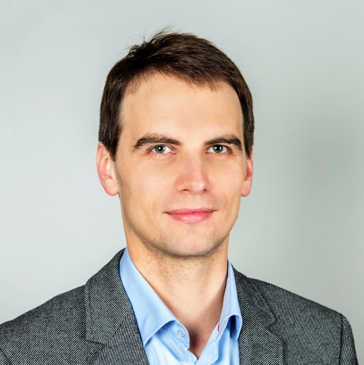

O mnie

W każdym miesiącu zgłasza się do mnie kilkudziesięciu pacjentów z różnymi problemami związanymi z ich samopoczuciem i zdrowiem psychicznym. Podchodzę do każdego Pacjenta indywidualnie i staram się się pomóc każdemu najlepiej, wykorzystując moją wiedzę i doświadczenie, a także współpracując z psychologami, psychoterapeutami oraz lekarzami innych specjalizacji aby diagnoza i porady uwzględniały wszystkie czynniki składające się na samopoczucie i zdrowie Pacjenta. Staram się w moim gabinecie stworzyć atmosferę, dzięki której Pacjent czuje się komfortowo, bezstresowo i wie że go wysłucham i spróbuję pomóc w jak najlepszy sposób, dostosowany do jego sytuacji.
Doświadczenie
- 2011- obecnie Oddział Psychiatryczny Instytutu Psychiatrii i Neurologii w Warszawie
- 2012-obecnie Centrum Terapii Specjalistycznej Dialog
- 2010-2011 Staż w Szpitalu Nowowiejskim w Warszawie
- Konferencje?
- Inne prace?